Modelo de pneu
Relação entre a força lateral e o ângulo de deriva.
Contents
Sintaxe
Fy = pneuFun(deriva,pneuDados)
Argumentos
Lista de entradas da função:
| deriva | Ângulo de deriva do pneu. Ângulo formado entre o vetor velocidade e o plano longitudinal do pneu. |
| pneuDados | Vetor com os dados do pneu. |
Lista de saídas da função:
| Fy | Força lateral do pneu. |
Funções de pneu - pneuFun
As opções de funções de pneu são aprentadas na tabela abaixo:
| pneuFun | Modelo | Argumentos de entrada |
| pneuLinearFun | Pneu linear | delta, pneuDados = [C] |
| pneuSadriFun | Pneu Sadri | delta, pneuDados = [k1 k2] |
| pneuPacejkaFun | Pneu pacejka | delta, pneuDados = [Fz0 muy0 Cy Ey c1 c2 Fz muy] |
Dados do pneu - pneuDados
Os dados do pneu dependem do modelo adotado. Este repositório possui os seguintes dados de pneu para cada modelo:
- pneuLinearDados (Linear)
- pneuSadriDadosTaylor (Sadri)
- pneuSadriDadosAjuste (Sadri)
- pneuPacejkaDados (Pacejka)
Estes modelos fornecem as informações dos parâmetros dos pneus para a determinação da força lateral exercida em função do ângulo de deriva.
Modelos
O modelo de pneu relaciona a força lateral com o ângulo de deriva (Ângulo formado entre o vetor velocidade do centro do pneu com o plano longitudinal do pneu). A relação típica entre essas duas grandezas pode ser observada na figura abaixo. Além disso é possível verificar a definição do ângulo de deriva.
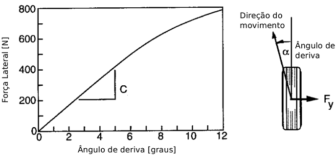
Modelo Linear
Para simulações em que os ângulos de deriva sejam pequenos é possível aproximar a curva característica por uma relação linear dada por:
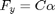
Onde 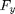 é a força lateral, 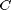 é o coeficiente de rigidez de curva e 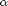 é o ângulo de deriva.
Para maiores informações sobre o modelo linear ver: pneuLinearFun
As opçoes de dados para este modelo são: pneuLinearDados
Modelo Sadri
Na tentativa de levar em consideração a não linearidade da curva característica muitos autores adotam o modelo de terceira ordem dado por:

Onde 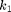 e 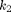 são constantes do modelo.
Para maiores informações sobre o modelo sadri ver: pneuSadriFun
As opçoes de dados para este modelo são: pneuSadriDadosTaylor e pneuSadriDadosAjuste
Modelo Pacejka
Uma outra alternativa para o modelar o pneu levando em consideração o seu comportamento não linear é através da versão simplificada da Magic Formula apresentada por Pacejka.
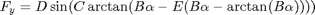
Onde 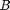, , 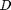 e 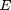 são coeficientes obtidos experimentalmente.
Para maiores informações sobre o modelo Pacejka ver: pneuPacejkaFun
As opçoes de dados para este modelo são: pneuPacejkaDados
Exemplo - Linear
Ilustrando a curva característica do pneu para um modelo linear.
deriva = (0:0.7:25)*pi/180; % Ângulo de deriva [rad] pneuLinearDados % Obtendo os dados do pneu linear (Dianteira e traseira) pneuDados = pneuDadosFrente; % Atribuindo aos dados usados na geração da curva FyLinear = pneuLinearFun(deriva,pneuDados); figure(1) box on plot(deriva*180/pi,-FyLinear,'Color','r','Marker','o','MarkerFaceColor','r') title('Modelo de pneu - Linear') ylabel('Força lateral [N]') xlabel('Ângulo de deriva [grau]')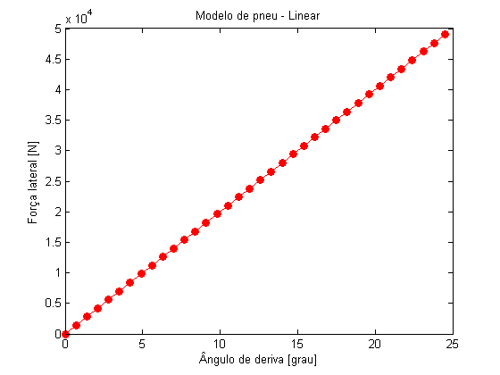
Exemplo - Sadri (Série de Taylor)
Ilustrando a curva característica do pneu para um modelo sadri.
deriva = (0:0.7:25)*pi/180; % Ângulo de deriva [rad] % Obtendo os dados do pneu Sadri a partir da expansão da Magic Formula em % série de Taylor (Dianteira e traseira) pneuSadriDadosTaylor pneuDados = pneuDadosFrente; % Atribuindo aos dados usados na geração da curva FySadriST = pneuSadriFun(deriva,pneuDados); figure(2) box on plot(deriva*180/pi,-FySadriST,'Color','c','Marker','*','MarkerFaceColor','c') title('Modelo de pneu - Sadri (Série de Taylor)') ylabel('Força lateral [N]') xlabel('Ângulo de deriva [grau]')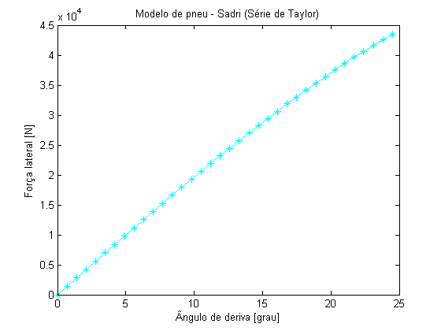
Exemplo - Sadri (Ajuste)
Ilustrando a curva característica do pneu para um modelo sadri.
deriva = (0:0.7:25)*pi/180; % Ângulo de deriva [rad] % Obtendo os dados do pneu Sadri a partir dos ajustes de inclinação e força % lateral máxima (Dianteira e traseira) pneuSadriDadosAjuste pneuDados = pneuDadosFrente; % Atribuindo aos dados usados na geração da curva FySadriAj = pneuSadriFun(deriva,pneuDados); figure(3) box on plot(deriva*180/pi,-FySadriAj,'Color','g','Marker','s','MarkerFaceColor','g') title('Modelo de pneu - Sadri (Ajuste)') ylabel('Força lateral [N]') xlabel('Ângulo de deriva [grau]')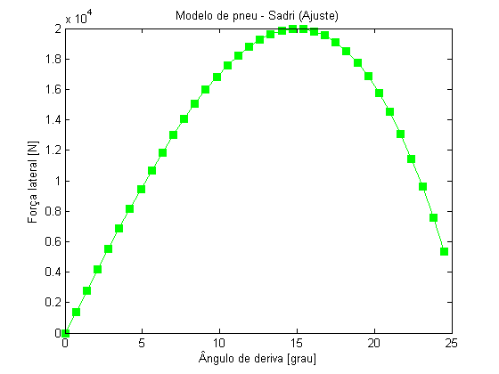
Exemplo - Pacejka
Ilustrando a curva característica do pneu para um modelo pacejka.
deriva = (0:0.7:25)*pi/180; % Ângulo de deriva [rad] pneuPacejkaDados % Obtendo os dados do pneu Pacejka (Dianteira e traseira) pneuDados = pneuDadosFrente; FyPacejka = pneuPacejkaFun(deriva,pneuDados); figure(4) box on plot(deriva*180/pi,-FyPacejka,'Color','b','Marker','d','MarkerFaceColor','b') title('Modelo de pneu - Pacejka') ylabel('Força lateral [N]') xlabel('Ângulo de deriva [grau]')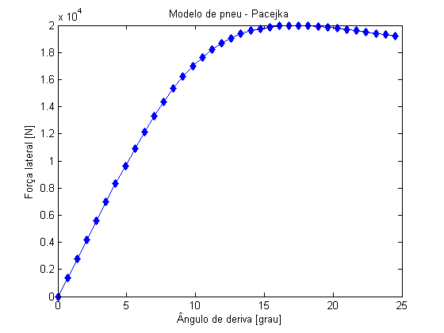
Exemplo - Comparação
Comparação dos modelos para parâmetros equivalentes.
figure(5) box on hold on plot(deriva*180/pi,-FyLinear,'Color','r','Marker','o','MarkerFaceColor','r') plot(deriva*180/pi,-FySadriST,'Color','c','Marker','*','MarkerFaceColor','c') plot(deriva*180/pi,-FySadriAj,'Color','g','Marker','s','MarkerFaceColor','g') plot(deriva*180/pi,-FyPacejka,'Color','b','Marker','d','MarkerFaceColor','b') title('Comparação - Modelo de pneu') ylabel('Força lateral [N]') xlabel('Ângulo de deriva [grau]') legend('Linear','Sadri - Taylor','Sadri - Ajuste','Pacejka','Location','NorthWest')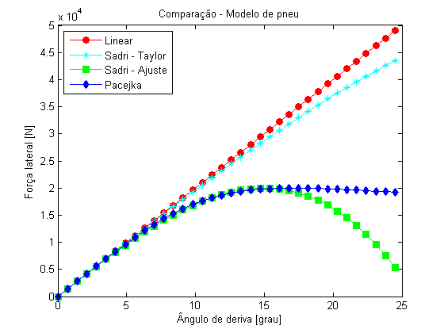
Exemplo - Comparação (Grandes ângulos)
Pacejka
deriva = (0:3:180)*pi/180; % Ângulo de deriva [rad] pneuPacejkaDados % Obtendo os dados do pneu Pacejka (Dianteira e traseira) pneuDados = pneuDadosFrente; FyPacejka = pneuPacejkaFun(deriva,pneuDados);
Pacejka estendido
deriva = (0:3:180)*pi/180; % Ângulo de deriva [rad] pneuPacejkaDados % Obtendo os dados do pneu Pacejka (Dianteira e traseira) pneuDados = pneuDadosFrente; FyPacejkaEst = pneuPacejkaEstFun(deriva,pneuDados); figure(6) box on hold on plot(deriva*180/pi,-FyPacejka,'Color','b','Marker','d','MarkerFaceColor','b') plot(deriva*180/pi,-FyPacejkaEst,'Color','m','Marker','+','MarkerFaceColor','m') title('Comparação - Grandes ângulos') ylabel('Força lateral [N]') xlabel('Ângulo de deriva [grau]') legend('Pacejka','Pacejka estendido','Location','South')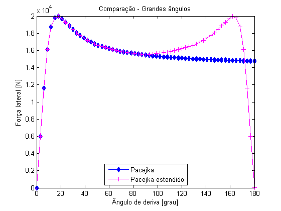